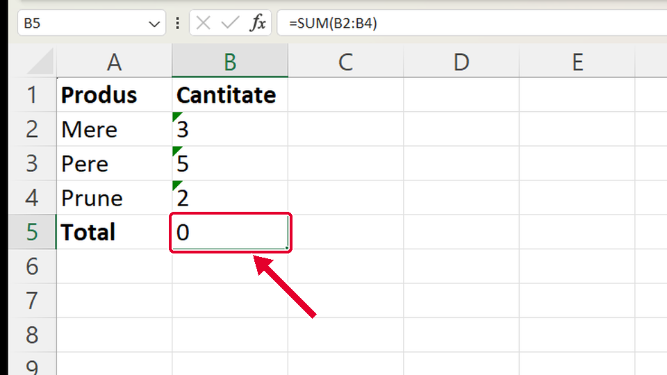
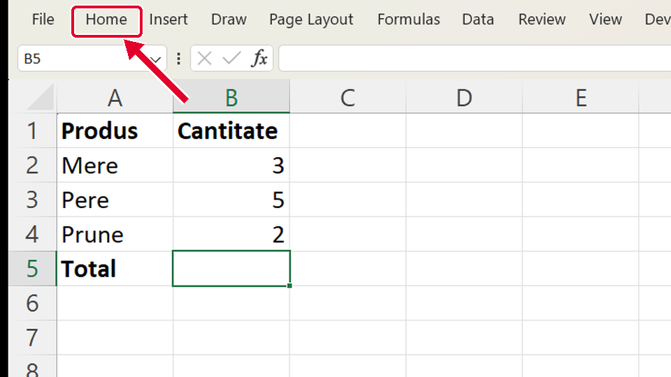
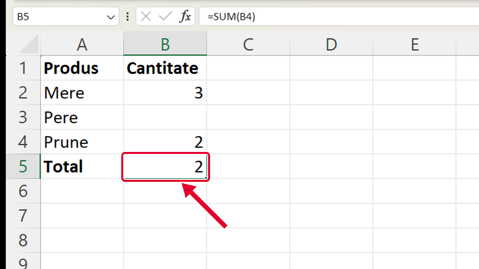

Început
Suma cu un singur buton
Taste: Spațiu = pauză / continuă · ← și → = pasul anterior / următor · cu Tab ajungi la „Rulează singur”; acolo Spațiu îl pornește sau îl oprește. Poți apăsa și pe film.

Legat de asta
Se deschid într-o filă nouă, ca să nu pierzi filmul de aici.
- ÎnainteCum scrii o formulă ↗
Ce este o formulă: semnul =, celulele și operația, apoi Enter.
- ApoiMedia cu funcția AVERAGE ↗
O funcție scrisă de tine, cu selecția făcută din mouse: media notelor cu AVERAGE.
- ApoiSortezi tot tabelul după o coloană ↗
Alt buton din panglică, pe fila Date (Data): pui tabelul în ordinea punctajelor, cu rândurile întregi.
Dacă nu-ți iese
Alege ce vezi pe ecran.
Totalul iese 0, deși în coloană sunt numere.

De ce: Numerele sunt de fapt TEXT (stau lipite la stânga și au un triunghi verde în colț). Adunarea sare peste text.
Ce faci:
- Selectezi numerele (B2:B4).
- Apeși pe semnul galben cu ! care apare lângă ele și alegi „Conversie în număr” (Convert to Number).
- Totalul se face singur corect.
Sus se văd doar numele filelor (Fișier, Pornire, Inserare…; în engleză File, Home, Insert…), fără butoane, deci nu găsești Σ.

De ce: Panglica e strânsă. Butoanele sunt tot acolo, doar ascunse.
Ce faci:
- Apeși Ctrl+F1: Panglica se deschide la loc.
- Sau dai dublu-clic pe numele filei Pornire (Home).
Taste: Ctrl+F1
Butonul Σ a adunat doar o parte din numere (totalul e prea mic).

De ce: În coloană e o celulă goală (B3). Σ Însumare automată (AutoSum) urcă de la celula ta doar până la prima celulă goală.
Ce faci:
- Dai clic pe B5 și apeși din nou Σ Însumare automată (AutoSum). Sau apeși Ctrl+Z (formula greșită dispare) și apoi din nou Σ.
- Înainte de Enter, uită-te la chenarul punctat: arată ce celule adună (aici doar B4, pentru că B3 e goală).
- Tragi cu mouse-ul peste celulele bune (B2:B4) sau scrii B2:B4 peste zona propusă, apoi apeși Enter.
- Dacă în B3 trebuia să fie un număr: îl scrii în B3, apoi dai clic pe B5, apeși din nou Σ și Enter. Formula deja scrisă nu se schimbă singură.
Taste: Ctrl+Z · Enter